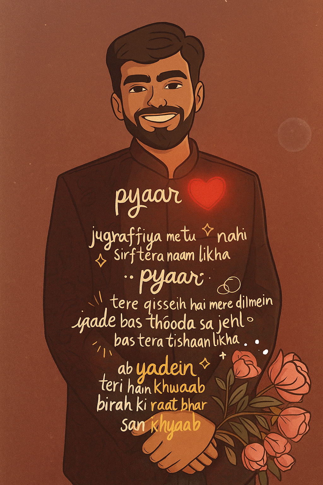

Hello again, I’m Aman Kumar.
I’m an engineer-turned-UX designer with a deep passion for crafting intuitive digital experiences. My core skills include:
- User Research & Testing: Conducting interviews, surveys, and usability tests to uncover real user needs.
- Wireframing & Prototyping: Proficient in Figma for creating interactive mockups and high-fidelity prototypes.
- Front-end Development: Solid grasp of HTML, CSS, and JavaScript to bridge the gap between design and implementation.
- Visual Design Fundamentals: Strong foundation in typography, color theory, and layout principles.
- Communication & Collaboration: Comfortable leading design critiques, presenting to stakeholders, and working cross-functionally.
Beyond work, I’m a creative soul with diverse interests. Some of my favorite activities include:
- Drama & Acting: Performing in local theatre productions and short films—nothing beats the thrill of being on stage.
- Stand-up Comedy & Debate: Writing my own sets, performing at open-mic nights, and sharpening my critical thinking in friendly debates.
- Dance & Sports: Practicing contemporary dance routines and staying active through badminton and cricket matches.
- Learning Languages: Currently working on Kannada proficiency—always excited by the challenge of mastering a new tongue.
- Photography & Graphic Art: Experimenting with street photography in Patna and creating vector illustrations in my free time.
Personally, I’m known for being:
- Curious & Empathetic: I love diving into new topics and really listening to people’s stories—this empathy drives every design decision I make.
- Disciplined & Goal-Oriented: Whether it’s waking up early to practice wireframing or dedicating daily hours to IELTS prep, I stick to my commitments.
- Adaptable & Collaborative: Growing up in a farmer-background family in Patna taught me resourcefulness, and working on cross-functional teams has made me a strong team player.
- Positive & Energetic: My friends know me as someone who’s always up for a challenge—be it a design sprint or organizing a community event.
Right now, I’m focusing on honing my UX and front-end skills, preparing for a Master’s in User Experience Design, and building connections in the design community. If you share similar interests or have an exciting opportunity, let’s connect!